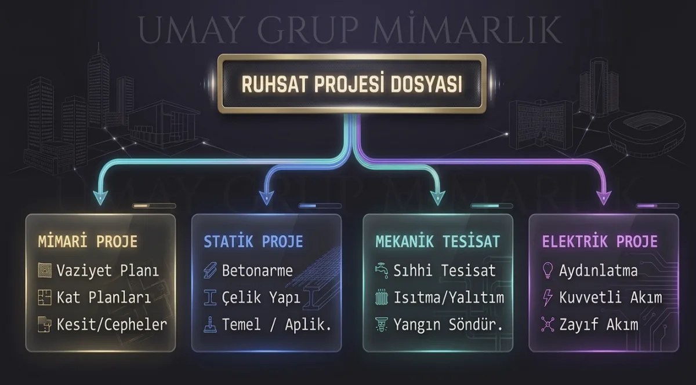

01
Mimari Proje ve Ruhsat Süreçleri
Bir yapının yasal mevzuatlara, estetik kaygılara ve kullanıcı ihtiyaçlarına uygun teknik/sanatsal rehberini hazırlıyorum. İnşaat ruhsatı alım sürecinde mimari, statik, mekanik ve elektrik disiplinlerinin birbiriyle tam uyum içinde çalışmasını sağlıyor; vaziyet planından kat planlarına, kesit ve cephe detaylarına kadar tüm çizimleri titizlikle hazırlıyorum.
